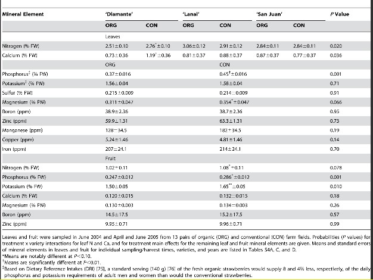
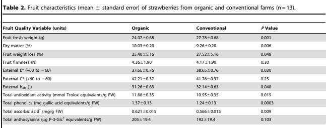

He trobat un article escrit per John P. Reganold al.(2010) que analitza si hi ha diferències entre el maduixot cultivat de manera normal o convencional i maduixot cultivat ecologicament pel que ffa el contingut de nutrients.Aquest article diu que el maduixot ecològic van produïr fruita de major qualitat i que els seus sòls de major qualitat poden tenir una capacitat funcional microbiana i una resistència a l'estrès més gran. Aquestes troballes justifiquen investigacions addicionals destinades a detectar i quantificar aquests efectes i les seves interaccions.
He buscat informació primària acadèmica Google acadèmic
A continuació hi tenim una taula de resultats.La taula mostra que hi ha algunes diferències en la composició mineral entre maduixes orgàniques i convencionals, particularment en el nitrogen, fòsfor i bor. Aquests resultats poden reflectir diferents pràctiques de fertilització i maneig del sòl.
He trobat un altre resultat que parla sobre que les maduixes orgàniques tenen avantatges en contingut de matèria seca, activitat antioxidant, fenòlics totals i àcid ascòrbic, mentre que les convencionals tenen un pes fresc més alt. Les diferències en color i pèrdua de pes són lleus però significatives. Això suggereix que les maduixes orgàniques podrien oferir majors beneficis per a la salut en termes de compostos antioxidants i fenòlics. 